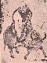

|
HEGEL: Vorlesungen über die Philosophie der Religion / ... / 1. Die chinesische Religion oder die Religion des Maßes -
b. Die geschichtliche Existenz dieser Religion
b. Die geschichtliche Existenz dieser Religion
Aus jener unmittelbaren Religion, welche der Standpunkt der Zauberei war,
sind wir zwar herausgetreten, da der besondere Geist sich jetzt von der Substanz unterscheidet und zu ihr in Verhältnis steht,
daß er sie als die allgemeine Macht betrachtet.
In der chinesischen Religion, welche die nächste geschichtliche Existenz dieses substantiellen Verhältnisses ist, wird die Substanz als der Umfang des wesentlichen Seins, als das Maß gewußt;
das Maß gilt als das Anundfürsichseiende, Unveränderliche, und Tien,
der Himmel, ist die objektive Anschauung dieses Anundfürsichseienden.
Dennoch zieht sich auch die Bestimmung der Zauberei noch in diese Sphäre herein,
insofern in der Wirklichkeit der einzelne Mensch, der Wille und das empirische Bewußtsein desselben das Höchste ist. Der Standpunkt der Zauberei hat sich hier sogar zu einer organisierten Monarchie, deren Anschauung etwas Großartiges und Majestätisches hat, ausgebreitet.
Tien ist das Höchste, aber nicht nur im geistigen, moralischen Sinn.
Es bezeichnet vielmehr die ganz unbestimmte, abstrakte Allgemeinheit, ist der ganz unbestimmte Inbegriff physischen und moralischen Zusammenhangs überhaupt.
Daneben ist aber der Kaiser Regent auf Erden, nicht der Himmel; nicht dieser hat Gesetze gegeben oder gibt sie, welche die Menschen respektieren, göttliche Gesetze, Gesetze der Religion, Sittlichkeit. Nicht Tien regiert die Natur, sondern der Kaiser regiert alles, und er nur ist im Zusammenhang mit diesem Tien. Er nur bringt dem Tien Opfer an den vier Hauptfesten des Jahres; es ist nur der Kaiser, der sich unterredet mit Tien, seine Gebete richtet an ihn, er steht allein in Konnexion mit ihm und regiert alles auf Erden. Der Kaiser hat auch die Herrschaft über die natürlichen Dinge und ihre Veränderungen in seinen Händen und regiert die Mächte derselben.
Wir unterscheiden Welt, weltliche Erscheinung so, daß außer dieser Welt auch Gott regiert;
hier aber ist nur der Kaiser das Herrschende. Der Himmel der Chinesen, der Tien,
ist etwas ganz Leeres; die Seelen der Verstorbenen existieren zwar in ihm,
überleben die Abscheidung vom Körper, aber sie gehören auch zur Welt,
da sie als Herren der Naturkreise gedacht werden, und der Kaiser regiert auch über diese,
setzt sie in ihre Ämter ein und ab. Wenn die Toten als Vorsteher der natürlichen Reiche vorgestellt werden, so könnte man sagen: sie sind damit erhoben; in der Tat aber werden sie heruntergesetzt zu Genien des Natürlichen, und da ist es recht,
daß der selbstbewußte Wille diese Genien bestimmt.
Der Himmel der Chinesen ist daher nicht eine Welt, die über der Erde ein selbständiges Reich bildet und für sich das Reich des Idealen ist, wie wir uns den Himmel mit Engeln und den Seelen der Verstorbenen vorstellen oder wie der griechische Olymp vom Leben auf der Erde unterschieden ist, sondern alles ist auf Erden, und alles, was Macht hat, ist dem Kaiser unterworfen, und es ist dies einzelne Selbstbewußtsein, das auf bewußte Weise diese vollkommene Regentschaft führt.
Was das Maß betrifft, so sind es feste Bestimmungen, die Vernunft (Tao) heißen.
Die Gesetze des Tao oder die Maße sind Bestimmungen, Figurationen, nicht das abstrakte Sein oder abstrakte Substanz, sondern Figurationen der Substanz, die abstrakter aufgefaßt werden können, aber auch die Bestimmungen für die Natur und für den Geist des Menschen,
Gesetze seines Willens und seiner Vernunft sind.
- Die ausführliche Angabe und Entwicklung dieser Maße begriffe die ganze Philosophie und Wissenschaft der Chinesen. Hier sind nur die Hauptpunkte hervorzuheben.
Die Maße in der abstrakten Allgemeinheit sind ganz einfache Kategorien:
Sein und Nichtsein,
das Eins und Zwei, welches denn das Viele überhaupt ist.
Diese allgemeinen Kategorien sind von den Chinesen mit Strichen bezeichnet worden:
der Grundstrich ist die Linie; ein einfacher Strich (-) bedeutet das Eins und die Affirmation: ja; der gebrochene (- -) Zwei, die Entzweiung und die Negation: nein. Diese Zeichen heißen Kua (die Chinesen erzählen, sie seien ihnen auf der Schale der Schildkröte erschienen).
Es gibt vielfache Verbindungen derselben, die dann konkretere Bedeutungen von jenen ursprünglichen Bestimmungen haben.
Unter diesen konkreteren Bedeutungen sind besonders die vier Weltgegenden und die Mitte,
vier Berge, die diesen Weltgegenden entsprechen, und einer in der Mitte, fünf Elemente: Erde, Feuer, Wasser, Holz und Metall. Ebenso gibt es fünf Grundfarben, wovon jede einem Element angehört.
Jede chinesische regierende Dynastie hat eine besondere Farbe, Element usw.;
so gibt es auch fünf Grundtöne in der Musik; fünf Grundbestimmungen für das Tun des Menschen in seinem Verhalten zu anderen.
Die erste und höchste ist das Verhalten der Kinder zu den Eltern,
die zweite die Verehrung der verstorbenen Voreltern und der Toten,
die dritte der Gehorsam gegen den Kaiser, die vierte das Verhalten der Geschwister zueinander, die fünfte das Verhalten gegen andere Menschen.
Diese Maßbestimmungen machen die Grundlage, die Vernunft aus.
Die Menschen haben sich denselben gemäß zu halten; was die Naturelemente betrifft,
so sind die Genien derselben vom Menschen zu verehren.
Es gibt Menschen, die sich dem Studium dieser Vernunft ausschließend widmen,
sich von allem praktischen Leben fernhalten und in der Einsamkeit leben;
doch ist es immer die Hauptsache, daß diese Gesetze im praktischen Leben gehandhabt werden. Wenn sie aufrechtgehalten sind, wenn die Pflichten von den Menschen beobachtet werden,
so ist alles in Ordnung, in der Natur wie im Reiche; es geht dem Reiche und den Individuen wohl. Dies ist ein moralischer Zusammenhang zwischen dem Tun des Menschen und dem,
was in der Natur geschieht. Betrifft das Reich Unglück, sei es durch Überschwemmung oder durch Erdbeben, Feuersbrünste, trockene Witterung usw., so kommt dies allein daher,
daß der Mensch nicht die Vernunftgesetze befolgt hat,
daß Maßbestimmungen im Reiche nicht gut aufrechterhalten worden sind.
Dadurch wird das allgemeine Maß zerstört, und es bricht solches Unglück herein.
- Das Maß wird hier also als das Anundfürsichseiende gewußt.
Dies ist die allgemeine Grundlage.
Das Weitere betrifft nur die Betätigung des Maßes.
Die Aufrechterhaltung der Gesetze kommt dem Kaiser zu, dem Kaiser als dem Sohne des Himmels, welcher das Ganze, die Totalität der Maße ist.
Der Himmel als das sichtbare Himmelsgewölbe ist zugleich die Macht der Maße.
Der Kaiser ist unmittelbar der Sohn des Himmels (Tien-tse), er hat das Gesetz zu ehren und demselben Anerkennung zu verschaffen.
In einer sorgfältigen Erziehung wird der Thronfolger mit allen Wissenschaften und den Gesetzen bekannt gemacht. Der Kaiser erzeigt allein dem Gesetze die Ehre; seine Untertanen haben ihm nur die Ehre zu erweisen, die er dem Gesetz erweist.
Der Kaiser bringt Opfer. Dies ist nichts anderes, als daß der Kaiser sich niederwirft und das Gesetz verehrt. Ein Hauptfest unter den wenigen chinesischen Festen ist das des Ackerbaues.
Der Kaiser steht demselben vor; an dem Festtage pflügt er selbst den Acker; das Korn, welches auf diesem Felde wächst, wird zum Opfer gebraucht.
Die Kaiserin hat den Seidenbau unter sich, der den Stoff zur Bekleidung hergibt,
wie der Ackerbau die Quelle aller Nahrung ist.
- Wenn Überschwemmungen, Seuchen und dgl. das Land verwüsten und plagen,
so geht das allein den Kaiser an; er bekennt als Ursache des Unglücks seine Beamten und vorzüglich sich selbst: wenn er und seine Magistratspersonen das Gesetz ordentlich aufrechterhalten hätten, so wäre das Unglück nicht eingetreten.
Der Kaiser empfiehlt daher den Beamten, in sich zu gehen und zu sehen, worin sie gefehlt hätten, so wie er selbst der Meditation und Buße sich hingibt, weil er nicht recht gehandelt habe.
- Von der Pflichterfüllung hängt also die Wohlfahrt des Reiches und der Individuen ab.
Auf diese Weise reduziert sich der ganze Gottesdienst für die Untertanen auf ein moralisches Leben; die chinesische Religion ist so eine moralische Religion zu nennen (in diesem Sinne hat man den Chinesen Atheismus zuschreiben können).
- Diese Maßbestimmungen und Angaben der Pflichten rühren meistenteils von Konfuzius her: seine Werke sind überwiegend solchen moralischen Inhalts.
Diese Macht der Gesetze und der Maßbestimmungen ist ein Aggregat von vielen besonderen Bestimmungen und Gesetzen.
Diese besonderen Bestimmungen müssen nun auch als Tätigkeiten gewußt werden; als Besonderes sind sie der allgemeinen Tätigkeit unterworfen, nämlich dem Kaiser,
welcher die Macht der gesamten Tätigkeiten ist.
Diese besonderen Mächte werden nun auch als Menschen vorgestellt, besonders sind es die abgeschiedenen Voreltern der existierenden Menschen;
denn der Mensch wird besonders als Macht gewußt, wenn er abgeschieden,
d. h. nicht mehr in das Interesse des täglichen Lebens verwickelt ist.
Derjenige kann aber auch als abgeschieden betrachtet werden, der sich selbst von der Welt ausscheidet, indem er sich in sich vertieft, seine Tätigkeit bloß auf das Allgemeine,
auf die Erkenntnis dieser Mächte richtet, dem Zusammenhange des täglichen Lebens entsagt und sich von allen Genüssen fernhält; dadurch ist der Mensch auch dem konkreten menschlichen Leben abgeschieden, und er wird daher auch als besondere Macht gewußt.
- Außerdem gibt es auch noch Geschöpfe der Phantasie, welche diese Macht innehaben:
dies ist ein sehr weit ausgebildetes Reich von solchen besonderen Mächten.
Sie stehen sämtlich unter der allgemeinen Macht, unter der des Kaisers, der sie einsetzt und ihnen Befehle erteilt.
- Dieses weite Reich der Vorstellung lernt man am besten aus einem Abschnitt der chinesischen Geschichte kennen, wie er sich in den Berichten der Jesuiten, in dem gelehrten Werke Mémoires concernant les Chinois [Paris 1776 ff.] findet. An die Einsetzung einer neuen Dynastie knüpft sich unter anderem die Beschreibung von dem Folgenden.
Ums Jahr 1122 v. Chr., eine Zeit, die in der chinesischen Geschichte noch ziemlich bestimmt ist, kam die Dynastie der Tschou zur Regierung. Wu-wang war aus dieser der erste Kaiser; der letzte der vorhergehenden Dynastie Tschou-sin hatte wie seine Vorgänger schlecht regiert,
so daß die Chinesen sich vorstellten, der böse Genius, der sich ihm einverleibt, habe regiert.
Mit einer neuen Dynastie muß sich alles erneuen auf Erden und am Himmel; dies wurde vom neuen Kaiser mit Hilfe des Generalissimus seiner Armee vollbracht.
Es wurden nun neue Gesetze, Musik, Tänze, Beamte usf. eingeführt, und so mußten auch die Lebenden und die Toten vom Kaiser neue Vorsteher erhalten.
Ein Hauptpunkt war die Zerstörung der Gräber der vorhergehenden Dynastie,
d. h. die Zerstörung des Kultus gegen die Ahnherrn, die bisher Mächte über die Familien und über die Natur gewesen waren.
Da nun aber in dem neuen Reiche Familien vorhanden sind, die der alten Dynastie anhänglich waren, deren Verwandte höhere Ämter, besonders Kriegsämter hatten, welche zu verletzen jedoch unpolitisch wäre, so mußte ein Mittel gefunden werden, ihren verstorbenen Verwandten die Ehre zu lassen. Wu-wang führte dies auf folgende Weise aus.
Nachdem in der Hauptstadt, Peking war es noch nicht, die Flammen gelöscht waren, Flammen, die der letzte Fürst hatte anzünden lassen, um den kaiserlichen Palast mit allen Schätzen, Weibern usf. zu vernichten,
so war das Reich, die Herrschaft dem Wu-wang unterworfen und der Moment gekommen,
daß er als Kaiser in die Kaiserstadt einziehen,
sich dem Volke darstellen und Gesetze geben sollte. Er machte jedoch bekannt,
daß er dies nicht eher könne, als bis zwischen ihm und dem Himmel alles auf angemessene Weise in Ordnung gebracht sei. Von dieser Reichskonstitution zwischen ihm und dem Himmel wurde gesagt, sie sei in zwei Büchern enthalten,
die auf einem Berge bei einem alten Meister niedergelegt seien.
Das eine enthalte die neuen Gesetze und das zweite die Namen und die Ämter der Genien, Schen genannt, welche die neuen Vorsteher des Reichs in der natürlichen Welt sind,
so wie die Mandarine in der bewußten Welt.
Diese Bücher abzuholen wurde der General des Wu-wang abgeschickt;
dieser war selbst schon ein Schen, ein gegenwärtiger Genius, wozu er es bei seinem Leben schon durch mehr als vierzigjährige Studien und Übungen gebracht hatte.
Die Bücher wurden gebracht.
Der Kaiser reinigte sich, fastete drei Tage; am vierten Tage mit Aufgang der Sonne trat er in Kaiserkleidung hervor mit dem Buch der neuen Gesetze. Dies wurde auf dem Altar niedergelegt, Opfer dargebracht und dem Himmel dafür gedankt.
Hierauf wurden die Gesetze bekannt gemacht, und zur größten Überraschung und Satisfaktion des Volkes fand es sich, daß sie ganz so waren wie die vorigen.
Überhaupt bleiben bei einem Dynastienwechsel mit wenigen Abänderungen die alten Gesetze.
Das zweite Buch wurde nicht geöffnet, sondern der General damit auf einen Berg geschickt,
um es den Schen bekanntzumachen und ihnen zu eröffnen, was der Kaiser gebiete.
Es war darin ihre Ein- und Absetzung enthalten. Es wird nun weiter erzählt, auf dem Berge habe der General die Schen zusammenberufen; dieser Berg lag in dem Gebiete, aus dem das Haus der neuen Dynastie stammte.
Die Abgeschiedenen hätten sich am Berge versammelt, höher oder niedriger nach dem Range,
der General habe auf einem Thron in der Mitte gesessen, der zu diesem Behuf errichtet und herrlich geschmückt gewesen sei; er sei geziert gewesen mit den acht Kua, vor demselben habe die Reichsstandarte und das Zepter, der Kommandostab über die Schen, auf einem Altar gelegen, ebenso das Diplom des alten Meisters,
der dadurch den General bevollmächtigte, den Schen die neuen Befehle bekanntzumachen.
Der General las das Diplom; die Schen, die unter der vorigen Dynastie geherrscht hatten,
wurden wegen ihrer Nachlässigkeit, welche Ursache des eingebrochenen Unglücks sei, für unwürdig erklärt, weiter zu herrschen, und ihres Amtes entlassen.
Es wurde ihnen gesagt, sie könnten hingehen, wohin sie wollten, sogar ins menschliche Leben wieder eintreten, um auf diese Weise von neuem Belohnungen zu verdienen. Nun ernannte der abgeordnete Generalissimus die neuen Schen und befahl einem der Anwesenden, das Register zu nehmen und es vorzulesen.
Dieser gehorchte und fand seinen Namen zuerst genannt.
Der Generalissimus gratulierte ihm,
daß seine Tugenden diese Anerkennung erhalten hätten. Es war ein alter General.
Sodann wurden die anderen aufgerufen, teils solche, die im Interesse der neuen Dynastie umgekommen waren, teils solche, die im Interesse der früheren Dynastie gefochten und sich aufgeopfert hatten. Unter ihnen besonders ein Prinz, Generalissimus der Armee der früheren Dynastie. Er war im Kriege ein tüchtiger und großer General, im Frieden ein treuer und pünktlicher Minister gewesen und hatte der neuen Dynastie die meisten Hindernisse in den Weg gelegt, bis er endlich im Kriege umgekommen war. Sein Name war der fünfte, nachdem nämlich die Vorsteher über die vier Berge, welche die vier Weltteile und die vier Jahreszeiten vorstellten, ernannt waren. Als sein Amt sollte er die Inspektion über alle Schen,
die mit dem Regen, Wind, Donner und den Wolken beauftragt waren, erhalten.
Sein Name mußte aber zweimal gerufen und ihm erst der Kommandostab gezeigt werden, ehe er nähertrat; er kam mit einer verächtlichen Miene und blieb stolz stehen. Der General redete ihn an:
"Du bist nicht mehr, was du unter den Menschen warst, bist nichts als ein gemeiner Schen,
der noch kein Amt hat; ich soll dir vom Meister eins übertragen, ehre diesen Befehl." Hierauf fiel der Schen nieder, und es wurde ihm eine lange Rede gehalten und er zum Chef jener Schen ernannt, welche das Geschäft haben, den Regen und Donner zu besorgen. So wurde nun sein Geschäft, Regen zur rechten Zeit zu machen, die Wolken zu zerteilen, wenn sie eine Überschwemmung verursachen könnten, den Wind nicht zum Sturm werden zu lassen und den Donner nur walten zu lassen, um die Bösen zu erschrecken und sie zu veranlassen in sich zurückzukehren.
Er erhielt vierundzwanzig Adjutanten, deren jeder seine besondere Inspektion bekam, welche alle vierzehn Tage wechselte; unter diesen erhielten andere andere Departements.
Die Chinesen haben fünf Elemente, - auch diese bekamen Chefs.
Ein Schen bekam die Aufsicht über das Feuer in Rücksicht auf Feuersbrünste,
sechs Schen wurden über die Epidemien gesetzt und erhielten den Auftrag,
zur Erleichterung der menschlichen Gesellschaft sie zuweilen vom Überfluß an Menschen zu reinigen. Nachdem alle Ämter verteilt waren, wurde das Buch dem Kaiser wieder übergeben, und es macht noch den astrologischen Teil des Kalenders aus.
Es erscheinen in China jährlich zwei Adreßkalender, der eine über die Mandarine, der andere über die unsichtbaren Beamten, die Schen. Bei Mißwachs, Feuersbrünsten, Überschwemmungen usf. werden die betreffenden Schen abgeschafft, ihre Bilder gestürzt und neue ernannt.
Hier ist also die Herrschaft des Kaisers über die Natur eine vollkommen organisierte Monarchie.
Es gab unter den Chinesen auch schon eine Klasse von Menschen, die sich innerlich beschäftigten, die nicht nur zur allgemeinen Staatsreligion des Tien gehörten, sondern eine Sekte, die sich dem Denken ergab, in sich zum Bewußtsein zu bringen suchte, was das Wahre sei.
Die nächste Stufe aus dieser ersten Gestaltung der natürlichen Religion, welche eben war,
daß das unmittelbare Selbstbewußtsein sich als das Höchste, als das Regierende weiß nach dieser Unmittelbarkeit, ist die Rückkehr des Bewußtseins in sich selbst, die Forderung,
daß das Bewußtsein in sich selbst meditierend ist; und das ist die Sekte des Tao.
- Damit ist verbunden, daß diese Menschen, die in den Gedanken, das Innere zurückgehen,
auf die Abstraktion des Gedankens sich legen, zugleich die Absicht hatten, unsterbliche,
für sich reine Wesen zu werden teils indem sie erst eingeweiht waren, teils indem sie die Meisterschaft, das Ziel erlangt [hatten], sich selbst für höhere Wesen,
auch der Existenz, der Wirklichkeit nach, hielten.
Diese Richtung zum Innern, dem abstrahierenden reinen Denken, finden wir also schon im Altertum bei den Chinesen.
Eine Erneuerung, Verbesserung der Lehre des Tao fällt in spätere Zeit, und diese wird vornehmlich dem Lao-tse zugeschrieben, einem Weisen, etwas älter,
aber gleichzeitig mit Konfuzius und Pythagoras. Konfuzius ist durchaus moralisch, kein spekulativer Philosoph.
Der Tien, diese allgemeine Naturmacht, welche Wirklichkeit durch die Gewalt des Kaisers ist, ist verbunden mit moralischem Zusammenhang, und diese moralische Seite hat Konfuzius vornehmlich ausgebildet.
Bei der Sekte des Tao ist der Anfang, in den Gedanken, das reine Element überzugehen. Merkwürdig ist in dieser Beziehung, daß in dem Tao, der Totalität,
die Bestimmung der Dreiheit vorkommt.
Das Eins hat das Zwei hervorgebracht, das Zwei das Drei, dieses das Universum.
Sobald sich also der Mensch denkend verhielt, ergab sich auch sogleich die Bestimmung der Dreiheit.
Das Eins ist das Bestimmungslose und leere Abstraktion. Soll es das Prinzip der Lebendigkeit und Geistigkeit haben, so muß zur Bestimmung fortgegangen werden. Einheit ist nur wirklich, insofern sie zwei in sich enthält, und damit ist die Dreiheit gegeben.
Mit diesem Fortschritt zum Gedanken hat sich aber noch keine höhere geistige Religion begründet: die Bestimmungen des Tao bleiben vollkommene Abstraktionen, und die Lebendigkeit,
das Bewußtsein, das Geistige fällt sozusagen nicht in den Tao selbst, sondern durchaus noch in den unmittelbaren Menschen.
Für uns ist Gott das Allgemeine, aber in sich bestimmt; Gott ist Geist, seine Existenz ist die Geistigkeit.
Hier ist die Wirklichkeit, Lebendigkeit des Tao noch das wirkliche, unmittelbare Bewußtsein, daß er zwar ein Totes ist wie Lao-tse, sich aber transformiert in andere Gestalten, in seinen Priestern lebendig und wirklich vorhanden ist.
Wie Tien, dieses Eine, das Herrschende, aber nur diese abstrakte Grundlage, der Kaiser die Wirklichkeit dieser Grundlage, das eigentlich Herrschende ist, so ist dasselbe der Fall bei der Vorstellung der Vernunft. Diese ist ebenso die abstrakte Grundlage, die erst im existierenden Menschen ihre Wirklichkeit hat.
(Vorlesungen über die Philosophie der Religion / ... / 1. Die chinesische Religion oder die Religion des Maßes - b. Die geschichtliche Existenz dieser Religion)

|
|